Aguijon
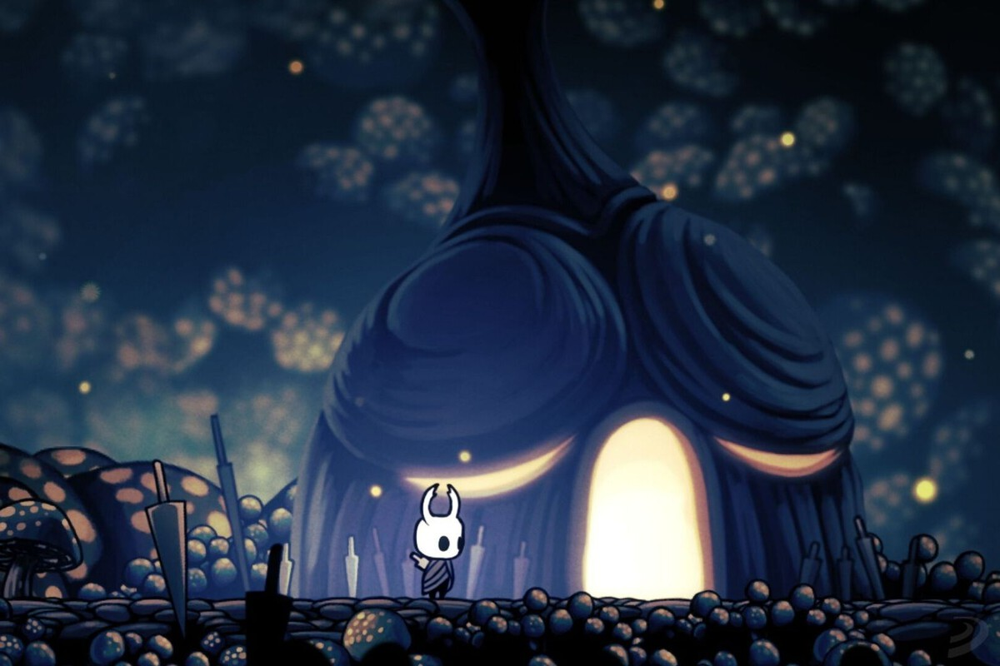
Se puede mejorar por un herrero en Ciudad de lagrima a la Izquierda, con Geo y Mineral Palido esto aumenta por mejora
Ver masSobrevivir en Hallownest, paso a paso
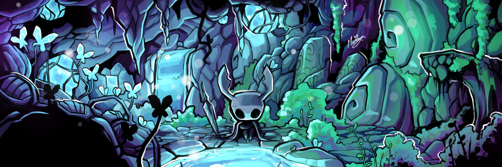
Objetos importantes y la Obtencion de los Item

Se puede mejorar por un herrero en Ciudad de lagrima a la Izquierda, con Geo y Mineral Palido esto aumenta por mejora
Ver mas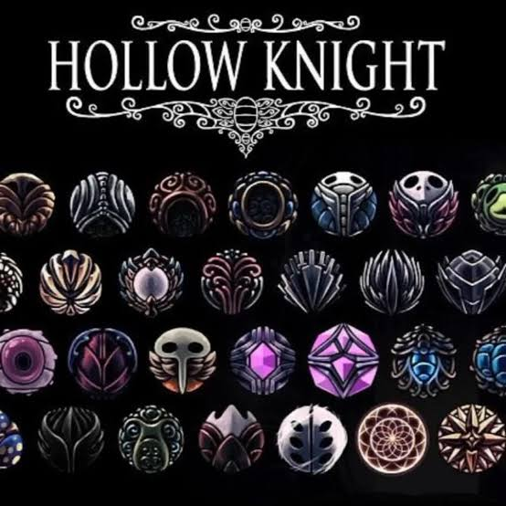
Puedes Encontrar Amuletos En cofres, lugares especificos o comprarlo a NPC. Juntar amuletos puede causar sinergias modifica la apariencia de los ataques y mejora
Ver mas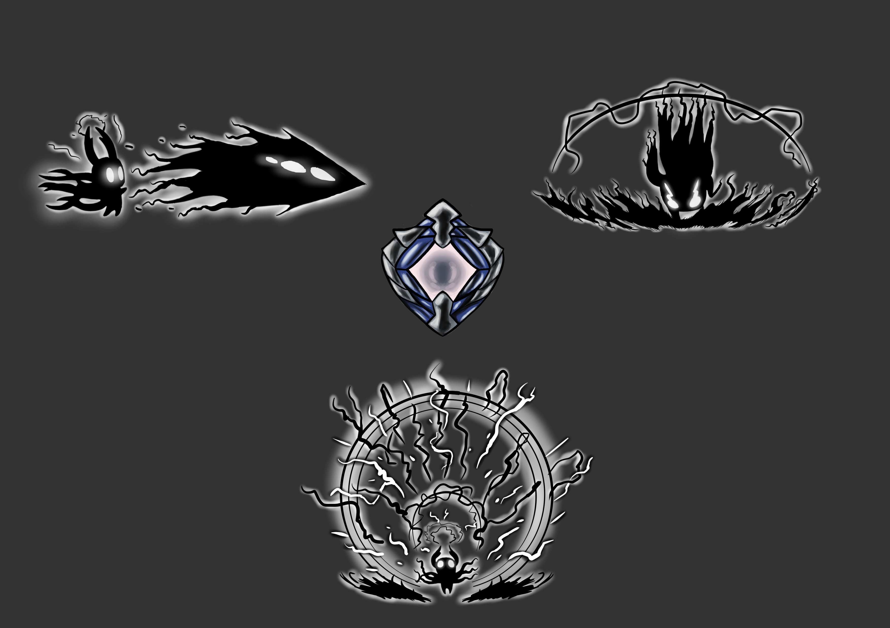
Habilidades que consume tu alma y ponteciados por amuletos, se pueden mejorar.
Ver masCombates con su zona y una recomendacion

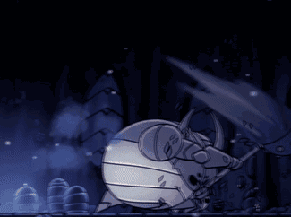
Zona: Forgotten Crossroads "Cruses Olvidados". Golpea su Cabeza cuando se aturde. Podras conseguir el hechizo Espirito Vengativo si golpeas la pared izquierda con grietas y volver a la pelea.
Ver mas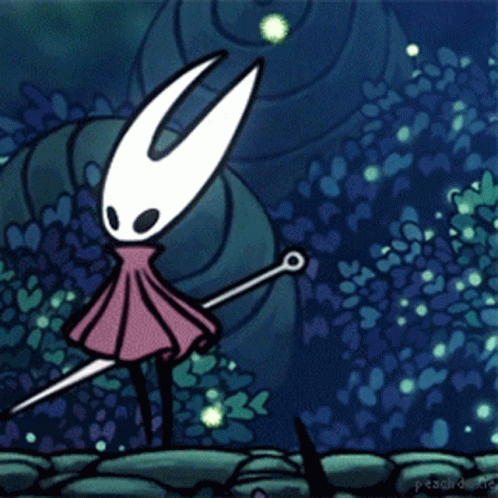
Zona: Greenpath "Sendero Verde". Tendras que recorrer todo el mapa para encontrarla. Es muy rápida: esquiva con saltos y ataca cuando aterriza. Tras derrotarla conseguiras la Capa Ala de Pollila.
Ver más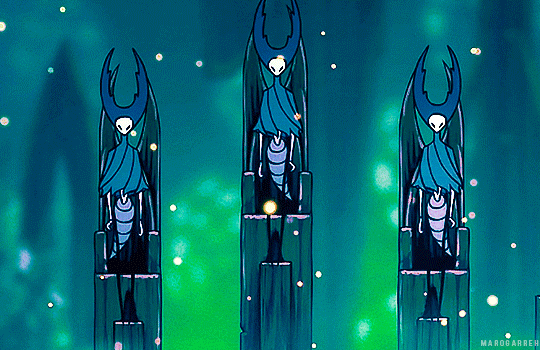
Zona: Mantis Village "Aldea Mantis". Se encuentra dentro de Paramos fungicos. Tienes que aprender el patron de la primera mantis, con eso podras aguantar a las otras Mantis hasta que quede solo una. Existe un combate opcional contra los tres guerreros.
Ver más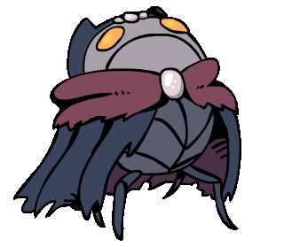
Zona: City of Tears "Ciudad de lagrimas". Se encontrara en la cima. Se teletransporta: ataca justo después de sus disparos. Utiliza la Capa sombria es muy util. Podras consegir el Hechizo Salto Desolador
Ver más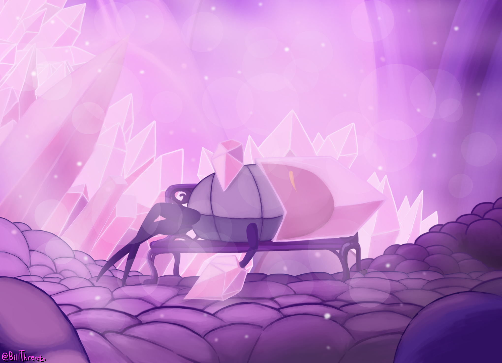
Zona: Crystal Peak "Cumbre de Crystal". Dispara láseres, quedarse quieto y saltar. Acercarce con la Capa Ala de Pollila para atacar.
Ver más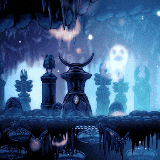
Zona: Crystal Peak "Tierra De Reposo". Jefe opcional pero Importante en el futuro. Invocar con el Aguijon Onirico, esquivar con la Capa y Esquivar.
Ver más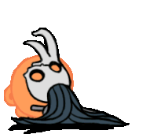
Zona: Ancient Basin "Cuenca Antigua". Necesitaras el Objeto Corazon de Cristal para poder acceder donde se encuentra. Esquiva sus saltos y golpea cuando aterriza, puedes utilizar Salto Desolador para obtener invulnerabilidad por 0.4 segundo.
Ver más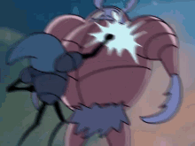
Zona: Royal Waterways "Canales Reales". Se esconde bajo tierra: ataca cuando asome. Puedes aturdirlo utilizando Salto Desolador.
Ver más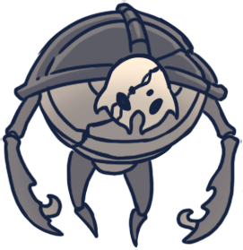
Zona: DeepNest "Nido Profundo". Guerrero que vuela, te lanza si Arma en que dira y revota se dirigen hasta donde estas. Avanza de fase aumentodo una esfera igual que el arma pero mas pequeña.
Ver más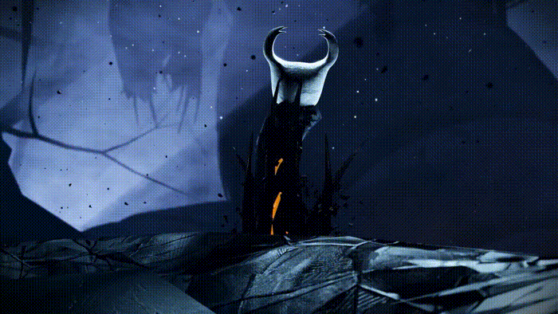
Zona: DeepNest "Nido Profundo". Se encuenta en lo mas profundo de Nido Profundo, igual que Hornet tienes que seguir a alguien igual que tu. Tendras que correr y esquivar, buscar el momento para atacarlo
Ver más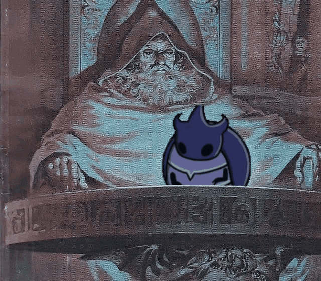
Zona: City of Tears "Ciudad de Lagrima". Puedes vencer a uno haciedo caer una Jaula encima del acensor. Despiertan 2 al mismo tiempo y se mueven rodando por la sala, recomendado el Espiritu Vengativo golpea 2 a la vez.
Ver más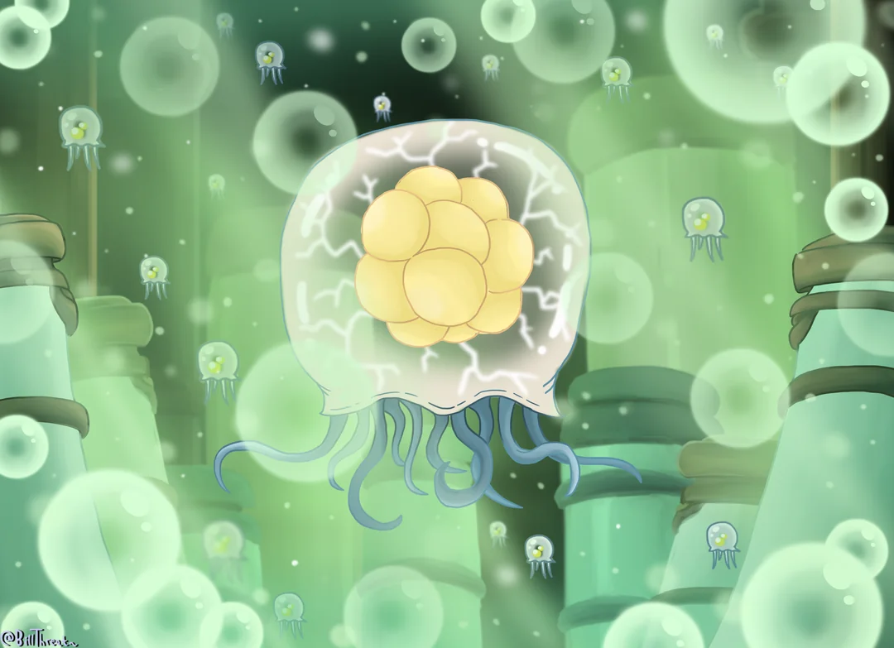
Zona: Fog Canyon "Cañon Nublado". Evita sus descargas eléctricas. Golpea Ooma con Aguijon o Espiruto Vengativo, para que el proyectil te siga hasta Uumuu
Ver más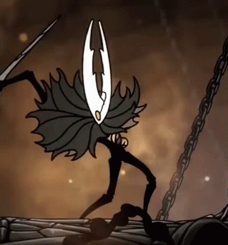
Zona: Black Egg Temple "Templo del Huevo Negro - Cruces Infectados". Llega con el Alma llena y amuletos de curación.
Ver más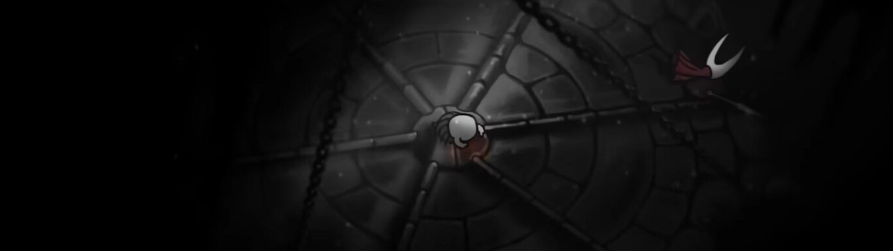
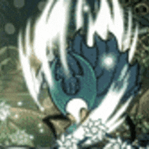
Zona: Queen's Gardens "Jardines de la Reina". Inicia con una holeada, Puedes esquivar los ataques lanzados con Capa Sombria y acercarte para atacarlo te baja el doble de vida que los anteriores jefes
Ver masZona: Queen's Gardens "Jardines de la Reina". Gira y revota por la paredes del sitio, puedes inflijir mas daño con el chillido del abismo
Ver mas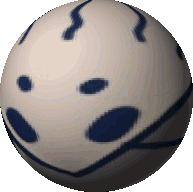
Zona: Howling Cliffs "Acantilados Aulladores". Facil y sencillo de vencer y esquivar.
Ver más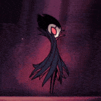
Zona: Dirtmouth "Boca Sucia". Requiere la actualización Grimm Troupe. Memoriza sus patrones.
Ver más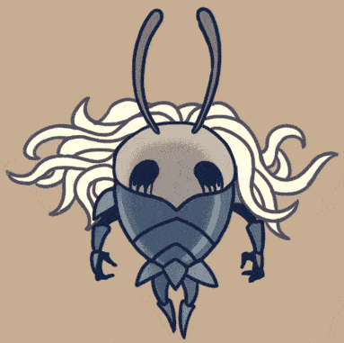
Zona: Greenpath "Sendero Verde". Guerrero que se mueve por en la zona de la pelea, tienes que estar serca para atacarlo, inflije mas daño con el Chillido del Abismo
Ver más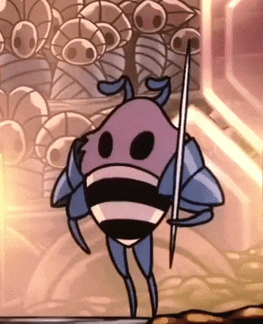
Zona: The Hive "La Colmena". Tienes que romper una pared para acceder a la zona donde se encuentra. Tendras que esquivar y lanzar hechizos para venserlos
Ver más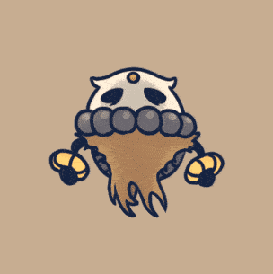
Zona: Fungal Wastelands "Páramos Fúngicos". Lanza ataque desde arriba, se puede esquivar y es facil de vencerlo.
Ver más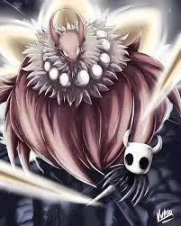
Zona: Kingdom boundary "Limites del Reino". Unos de los Jefes Oniricos Complicados. Ya que consta con un escudo que gira a su arrededor cubriendolo mientras te lanza espadas de luz. Esquivar y no te este lanzando espadas atacar de cerca o con hechizos
Ver más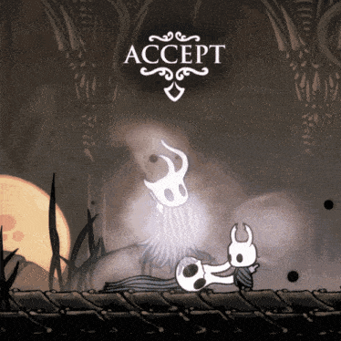
Zona: Ancient Basin "Cuenca Antigua". Jefe Onirico del Receptaculo Roto. Esquiva sus saltos, embestidas y golpea cuando aterriza, puedes utilizar Salto Desolador para obtener invulnerabilidad por 0.4 segundo.
Ver más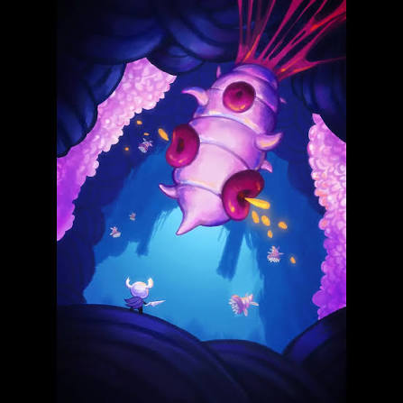
Zona: Royal Waterways "Canales Reales". Golpealo con Chillido del Abismo ya que es un enemigo que no se mueve, pero tienes que esquivar los bichos que explusa de su cuerpo
Ver más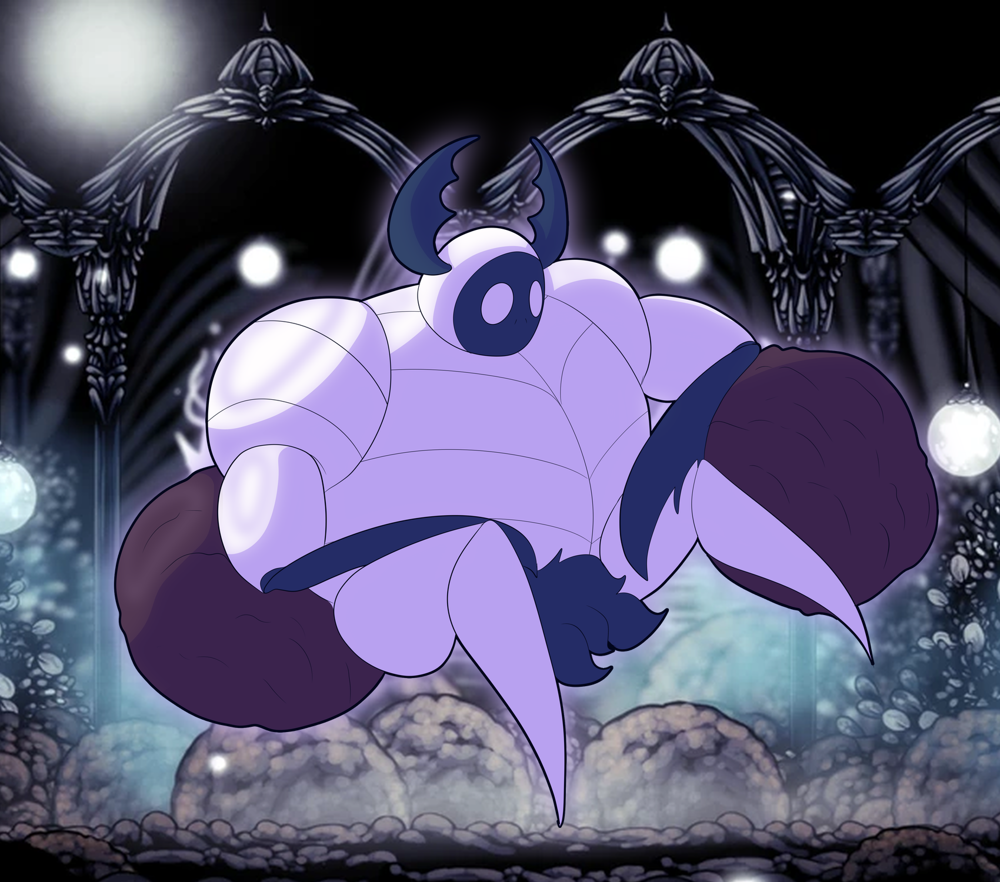
Zona: Royal Waterways "Canales Reales". Guerrero legendario a cargo del Rey Palido, Ya no se puede aturdir con el Salto Desolador
Ver más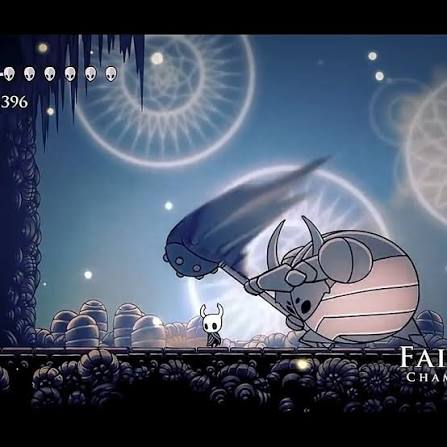
Zona: Forgotten Crossroads "Cruses Olvidados". Jefe Onirico del Guerrero poseedor del traje y del Rey Palido. Golpea su Cabeza cuando se aturde y lanzarles las piedras que caen del techo.
Ver mas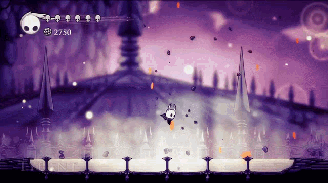
Zona: City of Tears "Ciudad de lagrimas". Jefe Onirico del Maestro de Alma, Se teletransporta ataca justo después de sus disparos. Utiliza la Capa sombria es muy util. Podras consegir el Hechizo Salto Desolador
Ver más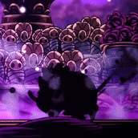
Zona: Dirtmouth "BocaSucia". Jefe Onirico de Zote. Esquivar, atacar y saltar, invoca bichos y cada vez que peleas y vuelves a desafiar es mas fuerte.
Ver más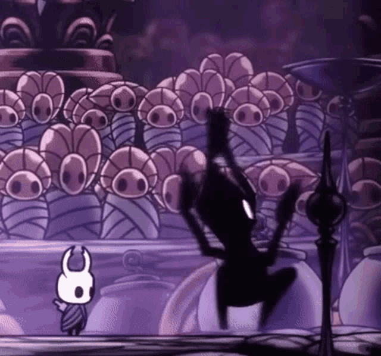
Zona: Tower of Love "Ciudad de Lagrima - Torre del Amor". Alta por el sitio, cuando sube al techo te lanza objetos con bichos dentros, rompelos antes que toque el suelo.
Ver más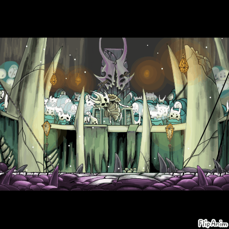
Zona: Colosseum of Fools "Coliseo de los Insensatos - Limites del Reino". Consta de 3 pruebas, Guerreros, Conquistadores e insensatos. Uno mas complejo que el anterior.
Ver más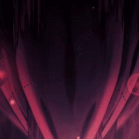
Zona: Dirtmouth "Boca Sucia". Requiere completar el amuleto brindado por Grimm y acceder con el aguijon onirico es mucho mas rapido que el normal, y tras vencerlo la compania se va de Boca Sucia.
Ver más
Zona: Black Egg Temple. Final alternativo: requiere la Dream Nail.
Ver más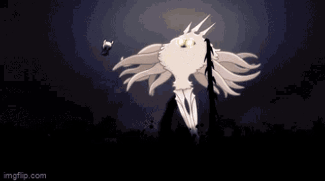
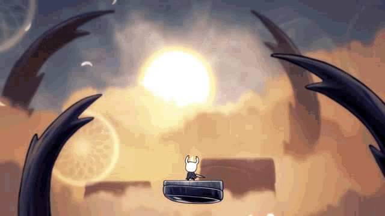
Zona: Black Egg Temple "Templo del Huevo Negro - Cruces Infectados". Final alternativo: requiere la Dream Nail. Vencer al Hollow Knight y Acceder al mundo Onirico. Esquivar y atacarlo con Chilladores del Avismo.
Ver más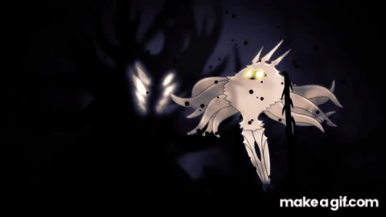
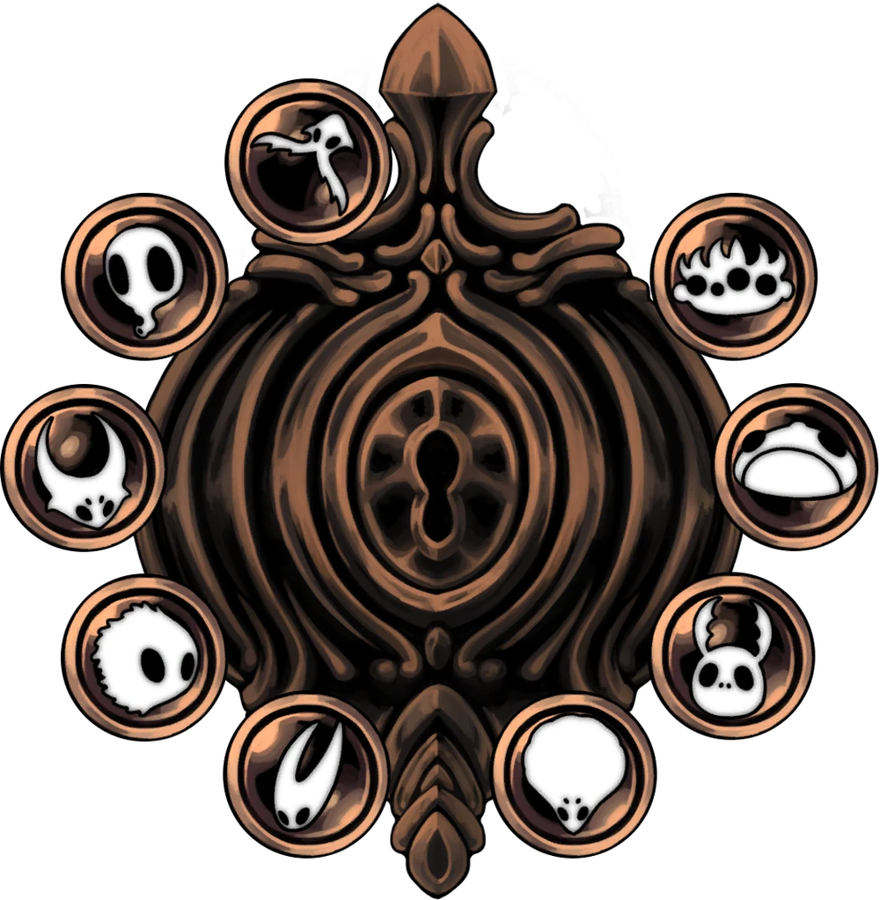
Jefes que se encontran al principio. Los jefes finales son los Hermanos Oro y Mato.
Ver más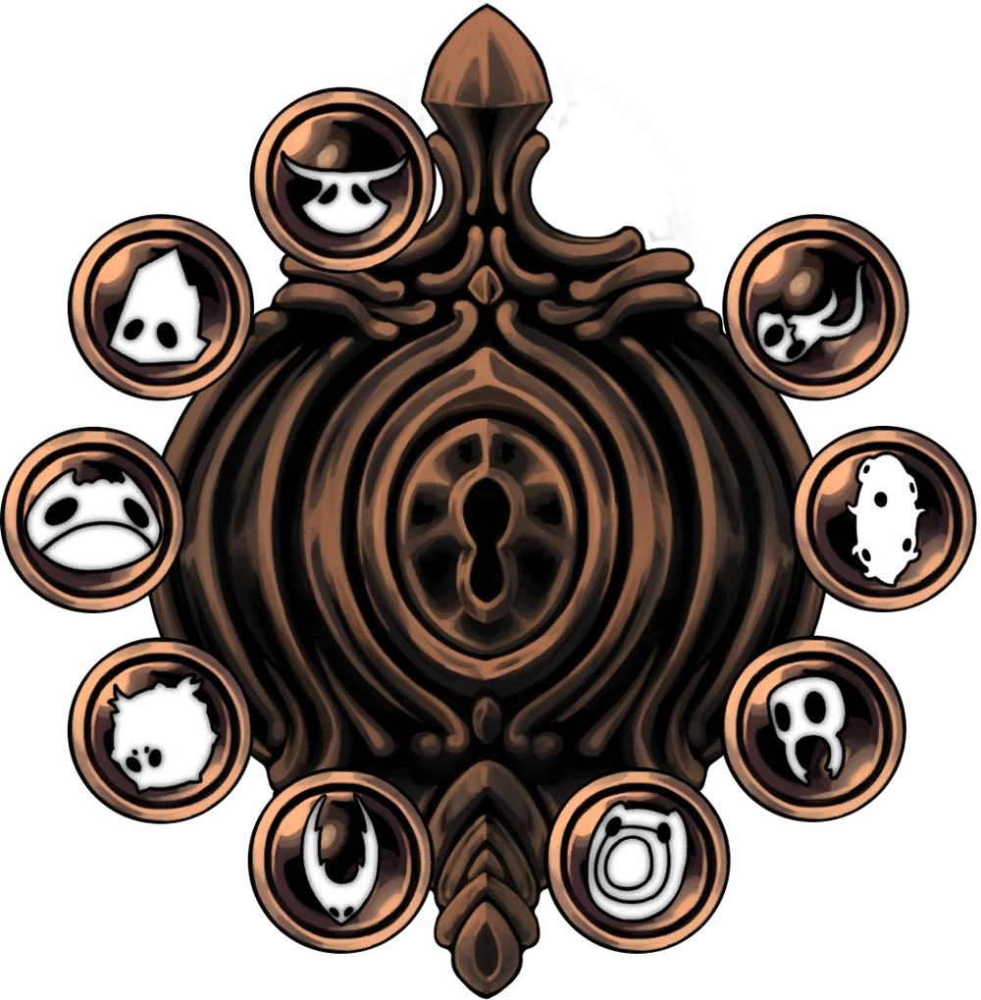
Este panteón contiene jefes que pueden ser combatidos desde el principio hasta la mitad del juego. El jefe final es el Maestro de Pintura Sheo.
Ver más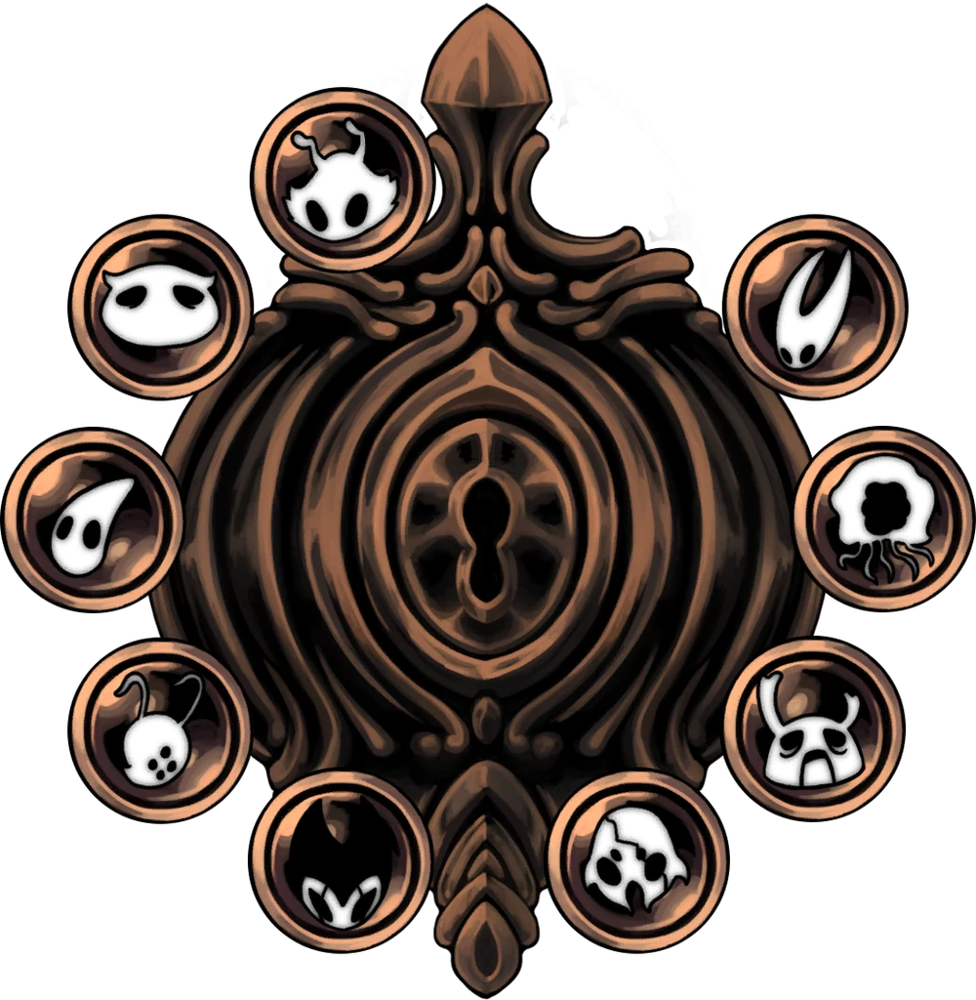
Los jefes encuentrados a mitad o final del juego. El jefe final de este Panteón es Gran Sabio del Aguijón Sly.
Ver más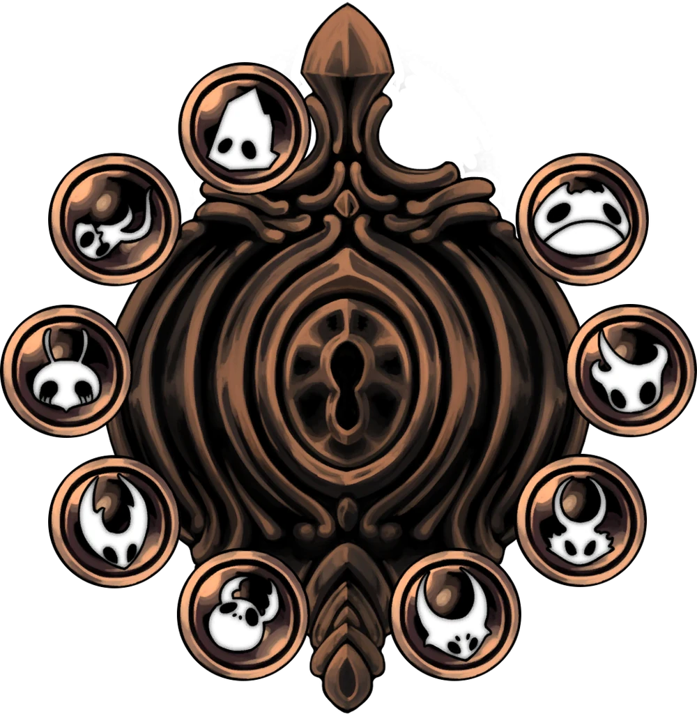
Se desbloquea después de haber completado los tres panteones anteriores. Tiene la mayoría de los jefes del final del juego, incluyendo varios que infligen dos máscaras de daño. El jefe final es Vasija Pura, una versión más dura y rápida de Hollow Knight.
Ver más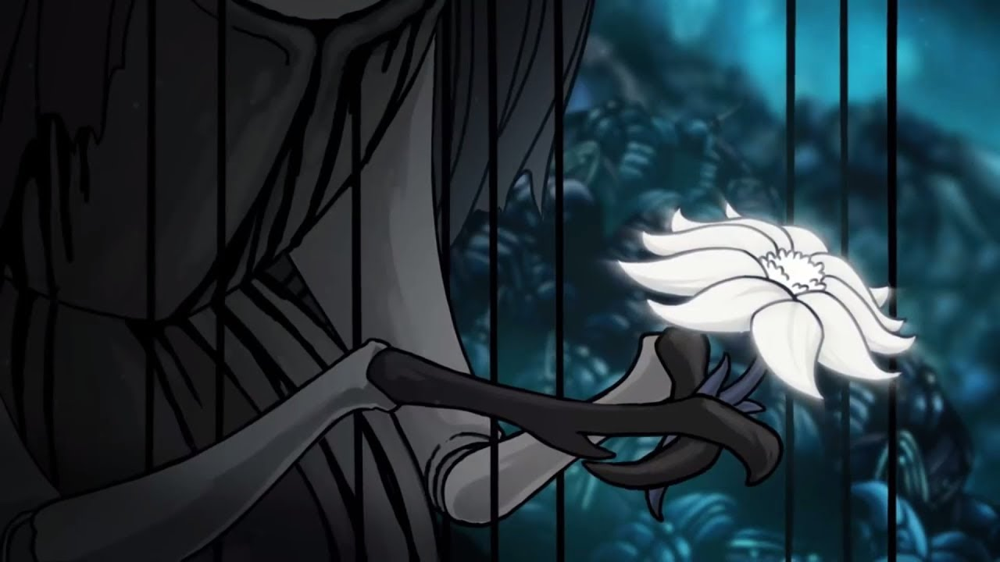
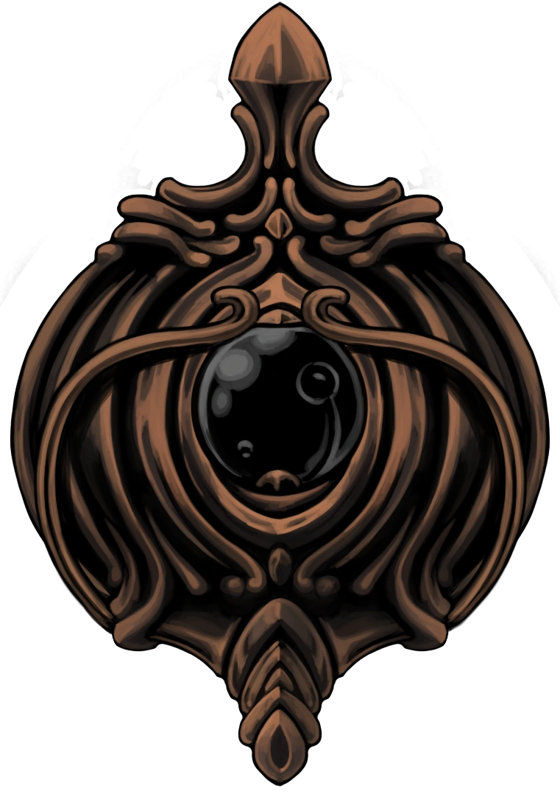
El acceso a este panteón se concede después de que se hayan completado los cuatro panteones anteriores y el jugador haya adquirido Corazón del Vacío. Este panteón contiene todos los jefes de los otros cuatro panteones, incluyendo sus jefes finales. Algunos de los jefes tienen una arena diferente o tienen una variante, como Hermanas de Batalla y Nosk Alado. Rey Pesadilla Grimm es uno de los jefes "nuevos" ya que no se encuentra en ningún otro panteón. Para más información sobre las olas ver aquí. El jefe final y definitivo es Absoluto Destello, una versión más dura de El Destello.
Ver másAcontinuacion Te Brindo Una PlayList de una Guia de Hollow Knight, Creada por Pixrael el Blanco. Ayuda audio visual